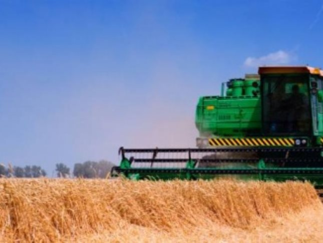

<rss version="2.0" xmlns:content="http://purl.org/rss/1.0/modules/content/"><channel><title>МояОкруга - Знамя труда</title><link>http://moyaokruga.ru/rss.aspx?id=1044</link><description>МояОкруга - Знамя труда</description><item><title>Глеб Никитин: &quot;Реконструкция малой чаши бассейна – серьезный проект для развития детского спорта</title><category>Служба новостей</category><region>Нижегородская область</region><city>Шахунский район</city><description><![CDATA[<p>5 октября 2018 года в Дзержинске после реконструкции открыли малую чашу бассейна СДЮШОР "Заря". 25-метровый бассейн был запущен в эксплуатацию в марте 1972 года.<br/>Читать полный текст на сайте <a href='Articles.aspx@articleId=206391.html'>Знамя труда</a><br/><br/><a href='Articles.aspx@articleId=206391.html'>Читать полностью</p>]]></description><link>http://moyaokruga.ru/znamiatruda-niz/Articles.aspx?articleId=206391</link><pubDate>26.10.2018 12:00:00</pubDate></item><item><title>Глеб Никитин: &quot;Финансирование сельского хозяйства в 2019 году планируется увеличить на 20%&quot;</title><category>Служба новостей</category><region>Нижегородская область</region><city>Шахунский район</city><description><![CDATA[<p>25 октября 2018 года в Нижегородском кремле губернатор Нижегородской области Глеб Никитин вручил труженикам агропромышленного комплекса региона награды за заслуги в развитии АПК региона.<br/>Читать полный текст на сайте <a href='Articles.aspx@articleId=206258.html'>Знамя труда</a><br/><br/><a href='Articles.aspx@articleId=206258.html'>Читать полностью</p>]]></description><link>http://moyaokruga.ru/znamiatruda-niz/Articles.aspx?articleId=206258</link><pubDate>26.10.2018 8:00:00</pubDate></item><item><title>Пенсионерам – почет</title><category>Из свежего номера</category><region>Нижегородская область</region><city>Шахунский район</city><description><![CDATA[<p>В выставочном зале Шахунского ГДК 11 октября прошло мероприятие, посвященное чествованию пенсионеров администрации г.о.г. Шахунья.<br/>Читать полный текст на сайте <a href='Articles.aspx@articleId=203265.html'>Знамя труда</a><br/><br/><a href='Articles.aspx@articleId=203265.html'>Читать полностью</p>]]></description><link>http://moyaokruga.ru/znamiatruda-niz/Articles.aspx?articleId=203265</link><pubDate>26.10.2018 8:00:00</pubDate></item><item><title>Работа по душе</title><category>Персона</category><region>Нижегородская область</region><city>Шахунский район</city><description><![CDATA[<p>Честно говоря, непривычно видеть капитана полиции Александра Владимировича Груздева в кабинете. Многие шахунцы помнят его по службе в отделении ГИБДД ОМВД. А там работу сидячей не назовешь.<br/>Читать полный текст на сайте <a href='Articles.aspx@articleId=203273.html'>Знамя труда</a><br/><br/><a href='Articles.aspx@articleId=203273.html'>Читать полностью</p>]]></description><link>http://moyaokruga.ru/znamiatruda-niz/Articles.aspx?articleId=203273</link><pubDate>26.10.2018 8:00:00</pubDate></item><item><title>Сложно, но престижно</title><category>Из свежего номера</category><region>Нижегородская область</region><city>Шахунский район</city><description><![CDATA[<p>Служить в отделе полиции, а ранее — милиции, всегда было престижно. До сих пор ходят слухи о том, что устроиться на работу туда можно, только имея связи. На самом деле, все не так.<br/>Читать полный текст на сайте <a href='Articles.aspx@articleId=203276.html'>Знамя труда</a><br/><br/><a href='Articles.aspx@articleId=203276.html'>Читать полностью</p>]]></description><link>http://moyaokruga.ru/znamiatruda-niz/Articles.aspx?articleId=203276</link><pubDate>26.10.2018 8:00:00</pubDate></item><item><title>Повысят возраст  не для всех</title><category>Информация</category><region>Нижегородская область</region><city>Шахунский район</city><description><![CDATA[<p>Президентом России Владимиром Путиным 3 октября был подписан федеральный закон №350 "О внесении изменений в отдельные законодательные акты Российской Федерации по вопросам назначения и выплаты пенсий"<br/>Читать полный текст на сайте <a href='Articles.aspx@articleId=203288.html'>Знамя труда</a><br/><br/><a href='Articles.aspx@articleId=203288.html'>Читать полностью</p>]]></description><link>http://moyaokruga.ru/znamiatruda-niz/Articles.aspx?articleId=203288</link><pubDate>26.10.2018 8:00:00</pubDate></item><item><title>Награды –  от Госдумы</title><category>Патр. воспитание</category><region>Нижегородская область</region><city>Шахунский район</city><description><![CDATA[<p>С 3 по 6 октября в Нижнем Новгороде Комитет Государственной Думы РФ по образованию и науке проводил совещание "Нормативно-правовое обеспечение реализации государственной программы<br/>Читать полный текст на сайте <a href='Articles.aspx@articleId=203308.html'>Знамя труда</a><br/><br/><a href='Articles.aspx@articleId=203308.html'>Читать полностью</p>]]></description><link>http://moyaokruga.ru/znamiatruda-niz/Articles.aspx?articleId=203308</link><pubDate>26.10.2018 8:00:00</pubDate></item><item><title>Не теща, а мама</title><category>Поздравляем!</category><region>Нижегородская область</region><city>Шахунский район</city><description><![CDATA[<p>Теща — героиня многих анекдотов, афоризмов и пословиц. Почему-то у большинства мужчин мама жены ассоциируется со сварливой теткой, вносящей раздоры в семейную жизнь.<br/>Читать полный текст на сайте <a href='Articles.aspx@articleId=205015.html'>Знамя труда</a><br/><br/><a href='Articles.aspx@articleId=205015.html'>Читать полностью</p>]]></description><link>http://moyaokruga.ru/znamiatruda-niz/Articles.aspx?articleId=205015</link><pubDate>26.10.2018 8:00:00</pubDate></item><item><title>О развитии кадрового потенциала сельского хозяйства</title><category>Служба новостей</category><region>Нижегородская область</region><city>Шахунский район</city><description><![CDATA[<p>25 октября на заседании Законодательного собрания в первом чтении был принят проект закона "О мерах по развитию кадрового потенциала сельскохозяйственного производства Нижегородской области".<br/>Читать полный текст на сайте <a href='Articles.aspx@articleId=206043.html'>Знамя труда</a><br/><br/><a href='Articles.aspx@articleId=206043.html'>Читать полностью</p>]]></description><link>http://moyaokruga.ru/znamiatruda-niz/Articles.aspx?articleId=206043</link><pubDate>25.10.2018 13:45:00</pubDate></item><item><title>Докапитализация регоператора</title><category>Служба новостей</category><region>Нижегородская область</region><city>Шахунский район</city><description><![CDATA[<p>25 октября 2018 года депутаты Законодательного собрания поддержали инициативу губернатора Нижегородской области Глеба Никитина о внесении изменений в бюджет региона на 2018 год и плановый период 2019 и 2020 годов.<br/>Читать полный текст на сайте <a href='Articles.aspx@articleId=206034.html'>Знамя труда</a><br/><br/><a href='Articles.aspx@articleId=206034.html'>Читать полностью</p>]]></description><link>http://moyaokruga.ru/znamiatruda-niz/Articles.aspx?articleId=206034</link><pubDate>25.10.2018 13:30:00</pubDate></item></channel></rss>